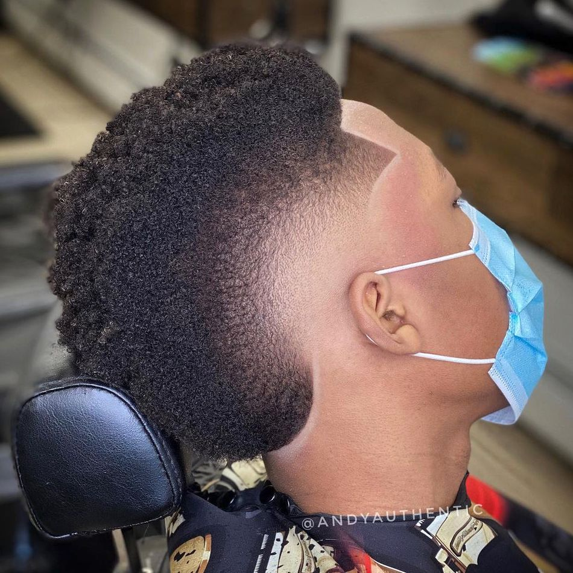

Low Fade
The low fade follows the hairline and takes it up about inch, more or less. Or create a new neckline to give hair a rounded shape when seen from the back.

Temple Fade
The template fade is a fade at the temples. It can vary in size from just the sideburns to up to the hairline. it never goes further back than the ear.For a temple fade, the neckline can be faded like a taper or can be shaped. The temp fade creates tight sides while maintaining maximum hair.

High Fade
You guessed it, high fade haircuts go up higher on the head. The line of the fade can be straight or curved, thick or blurry. A more defined line can also be called an undercut fade.
High Fade
description above
Mid Fade
The medium fade takes hair up higher on the head, landing somewhere in between a low and high fade. At this height, the fade can drop down in an arc behind the ear or cut a line around the back of the head.
Burst Fade
The burst fade is another one that doesn’t continue all the way around the head. It is shaped like a sunburst behind the ear while leaving hair at the neckline
Burst Fade
Description above

Temple Fade
Description above